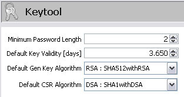

The keytool module offers settings which are accessible via Tools|Options|Keytool Preferences.
The keytool module has following settings:
This setting defines the minimum key password required. In the wizards where a store password, or keystore entry password is required this setting defines the minimum required password length.
Note: Other tools like the keytool
command uses a minimum password length of six characters.
This settings defines the default key validity used in the wizard for creating a new keystore entry.
Usually you set this value to 90 days, or 365 days.
The selected algorithm is the default algorithm used when a new key (certificate) is created.
The selected encryption algorithm is the default alogrithm used when a certificate signing request is created.